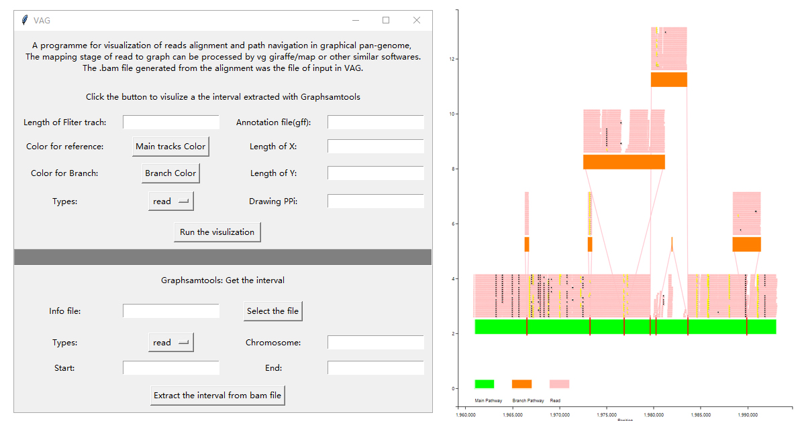
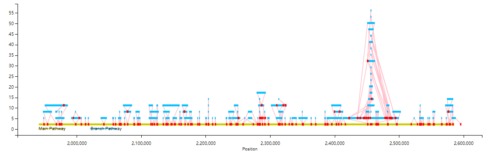
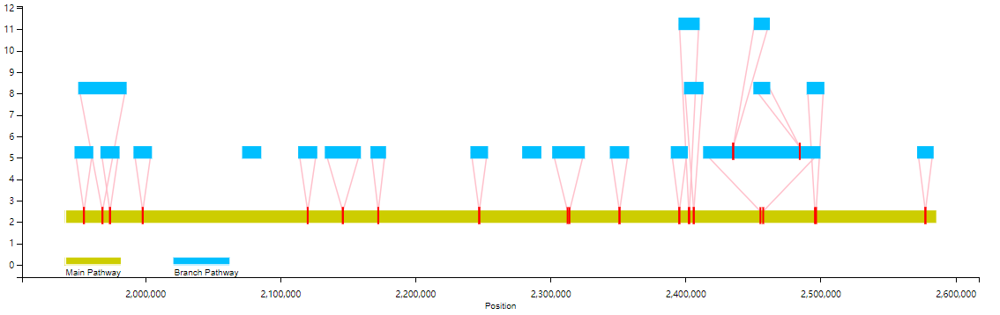
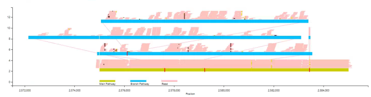
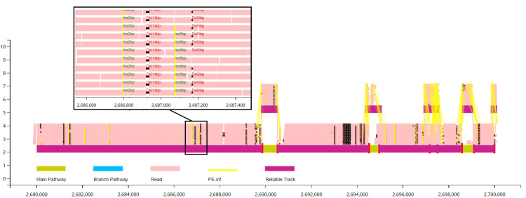
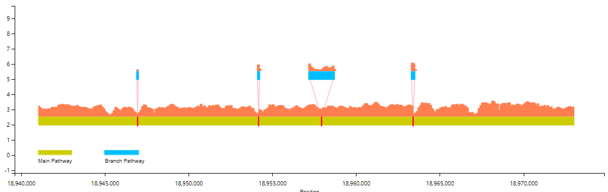
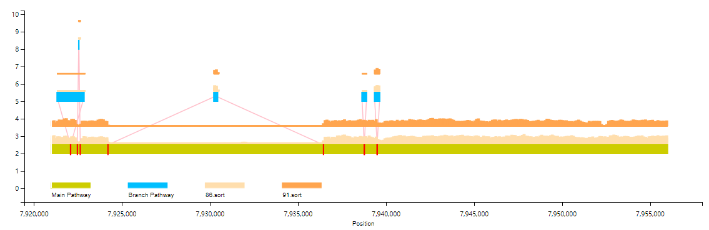
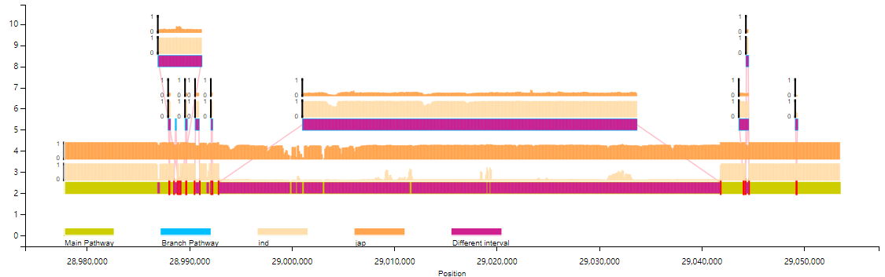
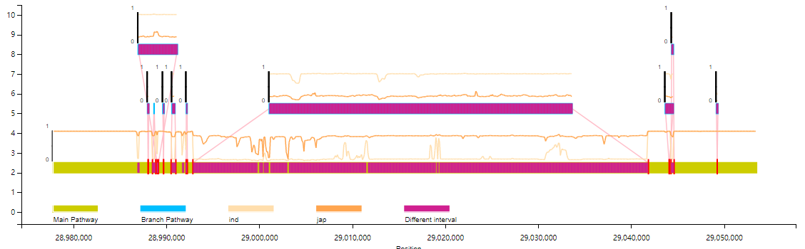
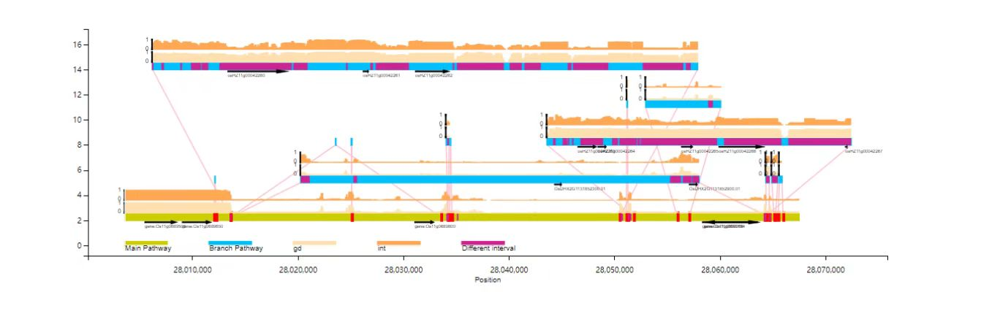

Documentation of VAG v1.01
Visualization and review of graphic pan-genome reads alignment based on VAG (not only visualization of read alignment)
The purpose of this document is to provide sufficient operational instructions for researchers to further integrate VAG services into scientific research and production.(https://github.com/lipingfangs/VAG)
The graphical pan-genome supported by VAG can be constructed by minigraph, cactus and other tools. The GFA files generated by the construction tools (specific reference genome main line is required; In some cases, it needs to be sorted to S line and interleft with the corresponding P line). It needs to be further converted to the Fasta format file through gfatools.
Executable version of Window systems
With the further maturity of VAG, we have launched the window version of VAG, and the interface will be further optimized. At present, we can basically perform the work from Graph file extraction, bam file extraction to visual display (the current version only supports read alignment result display (read) and graph genome (Graph) itself).
The Window version has integrated all dependent packages, click-to-use, by generating local image files and calling the browser to display interactive images. However, the generation of <.info> file and the conversion of pan-genome map format still need to be generated by getinf.py script and the script processed by gfatools.
For the visualization process, the user can freely select the parameters on the panel after clicking the button named "Run the visualization" selected by graphsamtools. The generated interval extraction fold (index) can be visualized. The current file generates a PNG image by default and calls the user's local default browser to open the interactive format visualization image.

For the sequence extraction process (graphsamtools), it is still recommended to carry out on Linux platform because the file size and computing resources consumed by the process are difficult for general Windows platform machines.
Command line version (The core of VAG)
The following "<>" shows the variable file naming content
gfatools gfa2fa -s <Graph name>.gfa > <Graph name>.fa
The script getinf.py integrated in VAG can be used to convert the Fasta file of Graphs to the info file required by the VAG.
python script/getinf.py <Graph name>.fa > <info.document>
The further working process of VAG can be divided into two parts:
● The graphsamtools script was used to extract the target interval of interest based on the selected reference genome interval.
● Using runVAG.py for visual production. This procedure outputs interactive format out.html and out.png files with default parameters,
● Based on the data types of visulization this part can be divided into:
1.Display of Graphic pan-genome:
graphsamtools <info.document> <chromosome number> <extraction start position> <extraction termination position> onlytrack <output folder>python runVAG.py --inindex <output folder of graphsamtools> --drawtype onlytrack
An Example as follow:

You can also filter the branch display by the length of the branchs (--fl option）
python runVAG.py --inindex <output folder of graphsamtools> --drawtype onlytrack --fl <filter length>
For example, the following is the effect of not showing branches below 10,000bp（branch）：

2. Display of alignment/mapping based on Graph pan-genome:
The Read to graph mapping phase can be handled with vg giraffe/map or other similar software. Where the generated .bam file is the input file for the VAG.
graphsamtools <info.document> <chromosome number> <extraction start position> <extraction termination position> <.bam file> <output folder>python runVAG.py --inindex <output folder of graphsamtools>
The basic example as follows: By default, only the Insertion/Deletion will be displayed, and mapping information will only be displayed to a depth of 20x, without SNP.

The users can choose to display the pair-end information in short sequence alignment. Based on this information, VAG can be used to estimate the reliable alignment path.
python runVAG.py --inindex <output folder of graphsamtools> --pairend 1 --anntracks 1

The Users can choose to display the alignment information as coverage information (calculated based on
mosdepth).
graphsamtools <info.document> <chromosome number> <extraction start position> <extraction termination position> <.bam file> <output folder>python runVAG.py --inindex <output folder of graphsamtools> --drawtype coverage
The basic example as follows (bar chart; Line chart is optional) :

The users can also select multiple samples in the same scale for coverage information display (more than three samples only support line chart display).
graphsamtools <info.document> <info.document> <chromosome number> <extraction start position> <extraction termination position> mutiplesamples <输出文件夹> <bam文件列表>python VAG/runVAG.py --inindex <output folder of graphsamtools> --drawtype mutiplesamples

#bam File List File Sample (does not include this line):sample1.bamsample2.bam
3. The Coveages frequency (PAV) between different populations can also be demonstrated.
The input file is the .frq file after the group PAV frequency is processed by the plink --maf (currently only two groups are supported; By default, the chi-square test is marked (Pvalue< 0.01) area of difference)
graphsamtools <info.document> <info.document> <chromosome number> <extraction start position> <extraction termination position> population <群体1.frq>,<群体名称1> <群体2.frq>,<群体名称2> <输出文件夹>python VAG/runVAG.py --inindex <output folder of graphsamtools> --drawtype populationfreq
Bar chart:

Line chart:
python VAG/runVAG.py --inindex <output folder of graphsamtools> --drawtype populationfreq --popline 1

# Sample group frq file (does not include this line) :CHR SNP A1 A2 MAF NCHROBS1 Chr1_950 A G 0.3237 4141 Chr1_1050 A G 0.04348 4141 Chr1_1150 A G 0 4141 Chr1_1250 A G 0 4141 Chr1_1350 A G 0 4141 Chr1_1450 A G 0 4141 Chr1_1550 A G 0 4141 Chr1_1650 A G 0 4141 Chr1_1750 A G 0 414
4.Annotation file
Gene /TE and other site annotation files can be added to the VAG for joint visualization:
python VAG/runVAG.py --inindex <output folder of graphsamtools> --drawtype populationfreq --gaingene 1 --gff <gff格式的注释文件>

Web version
WThe Web version supports deployment based on the Apache framework and relies on the php environment. Users can use theoutput folder of graphsamtools; After compression, upload the compressed package for visualization.

If you have any questions or comments on the use of this website, feel free to contact the author (lpf_bio@foxmali.com/fangping.li@scau.edu.cn)，we will reply promptly!
This work was done by the molecular breeding team at South China Agricultural University in association with the Rice Institute of Guangdong Academy of Agricultural Sciences. If your research uses our tools, please cite the paper: Visualization and review of reads alignment on the graphical pan-genome with VAG Fangping Li, Haifei Hu, Zitong Xiao, Jingming Wang, Jieying Liu, Deshu Zhao, Yu Fu, Yijun Wang, Xue Yuan, Suhong Bu, Xiaofan Zhou, Junliang Zhao, Shaokui Wang bioRxiv 2023.01.20.524849; doi: https://doi.org/10.1101/2023.01.20.524849,
A Chinese version of doucmentation:https://lipingfangs.github.io/VAGreadme.html